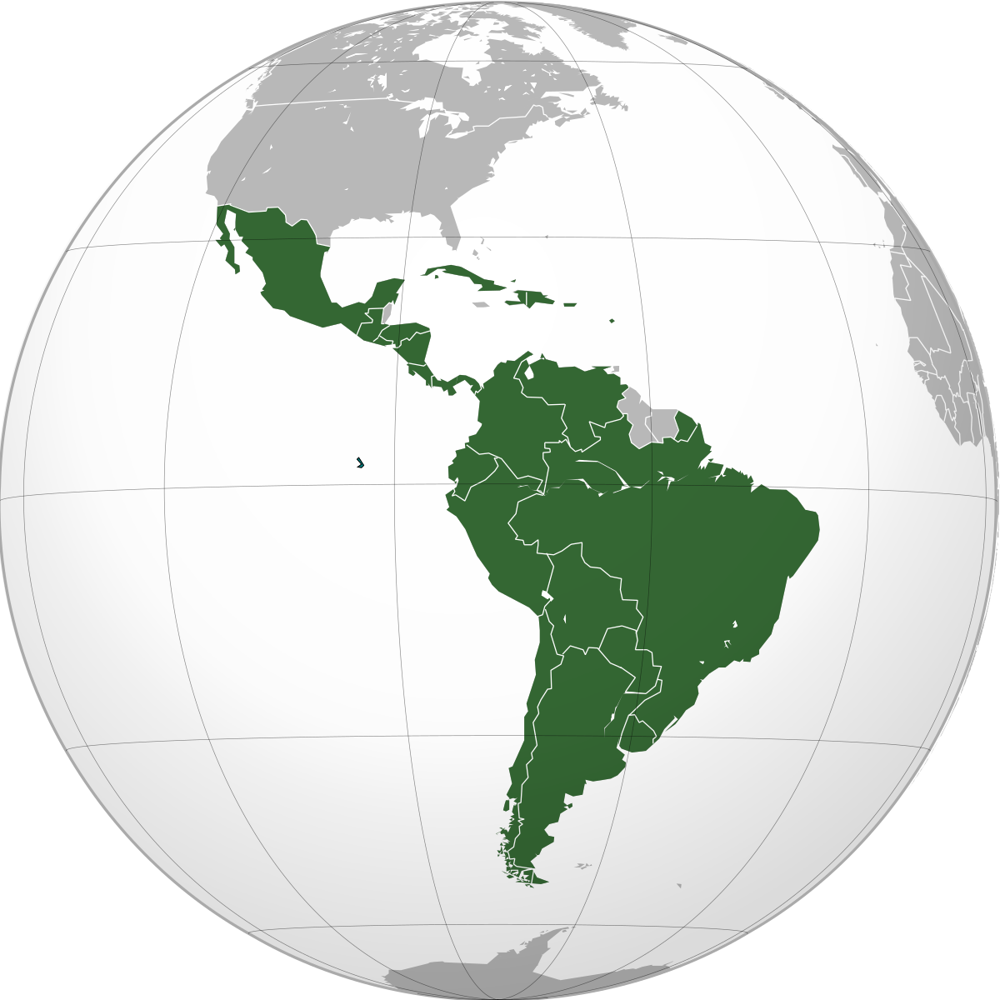

Ubicación
Es la zona geográfica. Entre el trópico de cáncer y el trópico de capricornio.
Condiciones climatológicas
El Clima ideal para el cultivo de café, es el tropical. Con temperaturas donde conviven ciclos húmedos y secos.
Suelo
Los cafetos prefieren un suelo rico en minerales, húmedos y con una amplia variedad de vegetación que brinde buena sombra al mismo.
Altitud
La altura que refiere el cafeto para dar fruto es de 800 a 2200 metros sobre el nivel del mar para granos de primera calidad.
Región
Las regiones productoras de café más importantes
Latinoamérica
África - Arabia

Asia - Pacífico